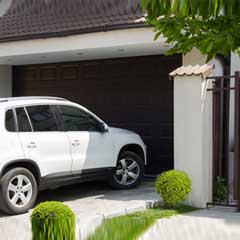

WHEN YOUR GARAGE DOOR OPENER STOPS WORKING, DON’T WORRY. HERE’S WHAT YOU CAN DO!

If your garage door opener goes on the fritz, there are a number of causes for your difficulties. Some are simple, and some are complicated. Let’s look at some possibilities and solutions.
Problems That Are Simple
Does the garage door opener run, yet the garage door still won’t open? If a power failure happens, your garage door opener comes with a disconnect switch, which allows you to close or open the garage door manually. In general, this switch is attached to a knob or rope, and it can come unhooked accidently. Open or close the garage door all the way, and then securely reattach the hook. Now, with the transmitter, try opening or shutting the door again, and it ought to work.
Is your garage door stuck open, and won’t shut? It’s likely that the photo eye sensors are out of alignment. Your garage door has a photo eye on both sides, and between them is an invisible beam, which, when it’s broken, keeps the garage door from closing. See whether they’re misaligned or grimy. On most styles and brands of sensors, if the light’s blinking, something is really wrong. Or, if you have a sensor with green and red lights, the red one is often the indicator that it’s malfunction.
Another possibility is the wiring. Examine the connections to see whether the wires are loose or corroded. There may be a short, which can sometimes be caused by a staple that was initially used in the process of installation; vibrations over the years can eventually result in a disconnection. Or, a disconnection will result from the wires becoming stretched.
Does the garage door not open using the remote? There are few causes for this, easy to repair yourself.
1. You should replace or charge the batteries.
2. You could be too far out of range.
3. The garage door motor’s antenna is damaged somehow or blocked from the signal.
4. The remote has to be reprogrammed.
Does the garage door opener run for several seconds, then turn off? If the garage door still won’t move when your garage door is closed, you’ll probably see that the door motor is trying and failing to lift the door up. First, inspect the springs. If they’re not broken, see whether the track is blocked by a minute obstacle or some grime. If neither of these is the issue, then see whether your garage door is the type that has a built-in lock, because it may be engaging inadvertently. This often occurs with older garage doors.
Does the garage door go down all the way, yet open again? The open-and-shut limit settings of the garage door opener are out of order. The settings tell the opener how far the garage door should go before it’s totally closed. If it’s set too high, the door will land on the floor before the opener thinks it should, because it’s presuming that the door is touching an object in its path; then it will reverse automatically to keep from smashing it. Read your manual for instructions on how to reset the open-and-shut limits.
Check your power source. Maybe the transmitter batteries just need replacement. Or, the electrical outlet could be defective.
Does your garage door open and close at random? If your garage door is opening or shutting by itself, the transmitter might be stuck underneath an object pushing down on the control mechanism unintentionally. For instance, the transmitter may be stuck beneath an item you left in your car or somewhere else close by. You can also test the transmitter’s frequency; your neighbor may have the exact same frequency as yours.
Problems That Are More Complicated
Does the garage door shut part of the way, then open again? Your garage door has a reversing mechanism to stop it from crushing an object in its path. The reversing instruction is triggered by any item on the ground in the garage door’s path, such as a bike, garbage can, box, or toy. Another likelihood is that there’s a buildup of debris on the garage door’s tracks ~ a tiny object or dirt ~ which will keep the rollers from moving. You’ll have to hire a garage door technician.
Does your garage door slam down with a loud bang? In all likelihood, your spring is broken, which is needed to counter the door’s weight. Or, the cables are broken. Either way, this is hazardous. It’s time to call an expert.
The garage door track might be out of alignment. If the track isn’t aligned, it’s not going to move. Look for gaps between the rail and rollers, or bends in the rails. The considerable weight of your garage door will ultimately compound these problems. This is serious. Before your garage door becomes dangerous, contact a professional.
If your garage door still won’t budge, a spring, or maybe both springs, are broken, and will need replacement or repair. You need to track down a garage door repair specialist.
DON’T EVER adjust the garage door by yourself! If you don’t get your garage door serviced professionally, the springs can cause injury, and even death. Don’t take any risks! The garage door drums, cables, and bottom brackets also may need adjusting. Consult with a trustworthy local garage door repair technician.
Take Preventative Measures
Garage door maintenance is worth the minimal time and effort you have to put into it. Keep your garage door in first-rate condition, and it will last a very long time.
Schedule an annual inspection with a reliable local garage door repair company. Wires, springs, pulleys, and cables all call for professional attention.
Every year, before winter arrives, lubricate the springs, rollers, and hinges. Without lubrication, the springs will rust and the coils will bind, costing you a lot in the long run. Prevent this from happening by using a top brand, so it won’t dry out. A light coating is all that’s required.
Once a month, take a close look at the components of your garage door system. Tighten loose bolts. Replace worn parts. If you notice any strange noises when the garage door opens and shuts, a garage door technician is needed.
If you live in East Point, Georgia, find a reputable garage door repair company you can count on, such as Complete Garage Door Repair.